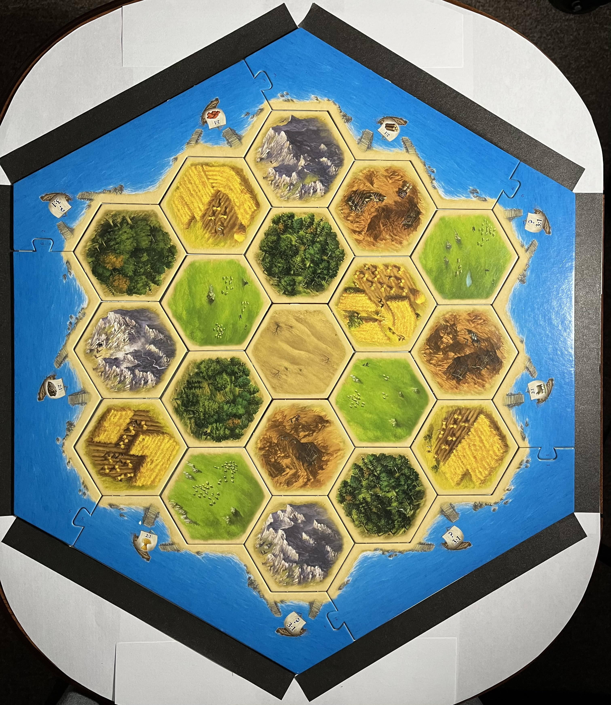
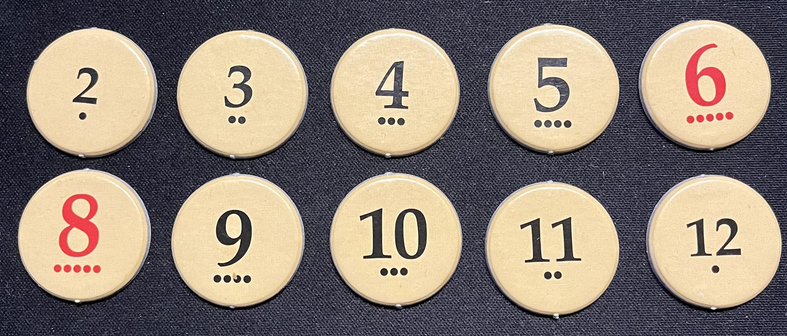
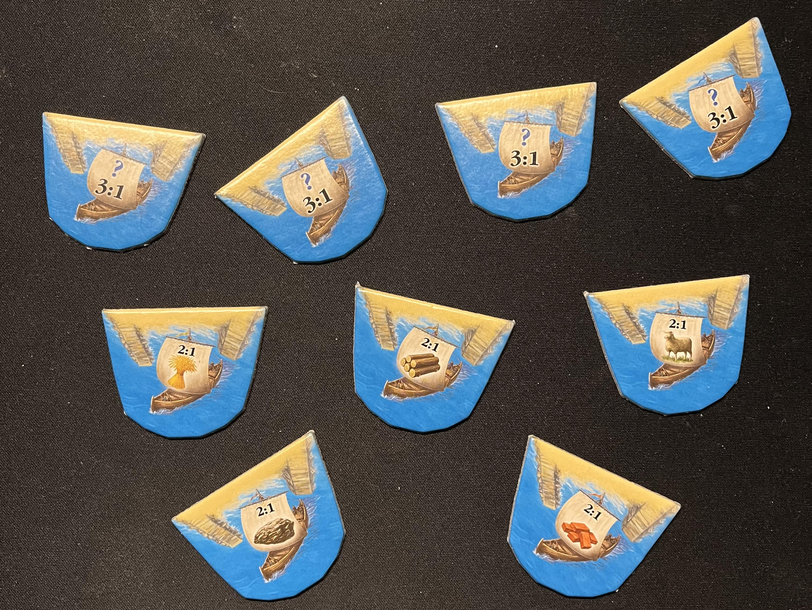
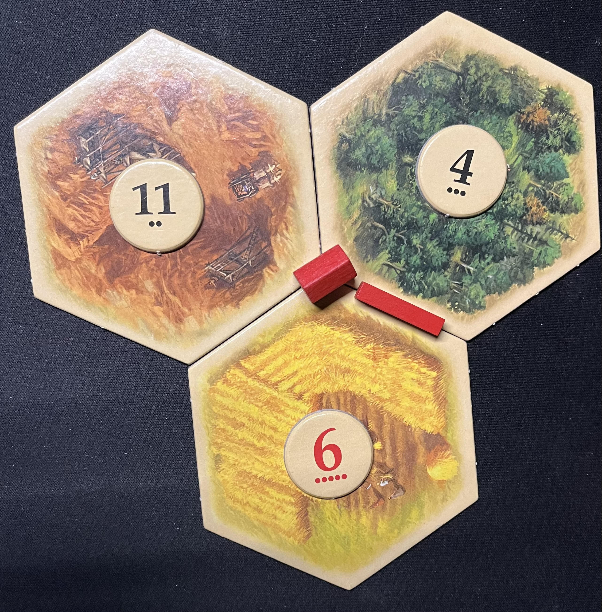
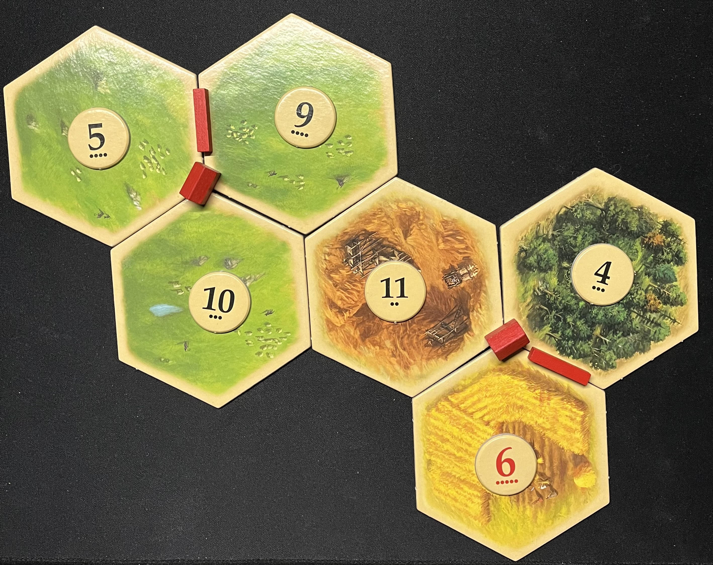
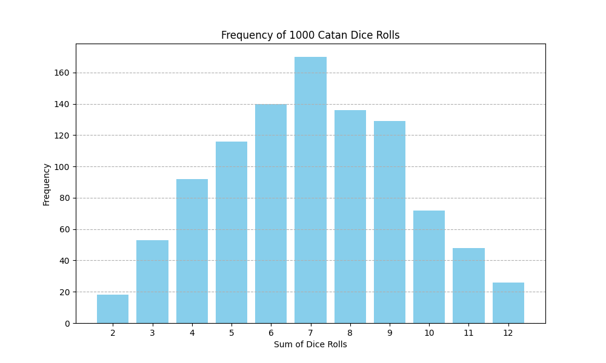
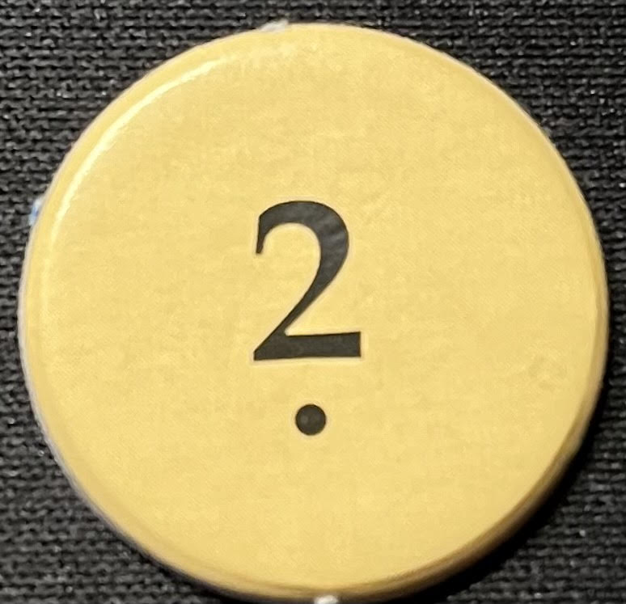

By: Matthew Barrington
Date: March 2nd, 2024
Catan is one of the most popular board games around the world, and that is partially due to math! Let me explain. Catan is a game of probability, one where you must examine several different possibilities and choose the route that will maximize your chances of winning. These possibilities exist all over the board, so I'll break it up into different sections...
A huge reason Catan is so well liked is its replayability. Every time you play a game of Catan, it is almost guaranteed to be a different setup (unless you follow one of the pre-made setups). So, how many setups of Catan actually exists? Well, there is a method to calculating that using probability. Here is where the math begins!
In a regular Catan board, there are 19 hexes on the board that can be placed in any order. That means, if each hex were completely unique, there would be 19! (19 * 18 * 17 *... * 1), which equals 121,645,100,408,832,000. This number is about one-hundred and twenty-one quadrillion. In order to play all of these variations, you would have needed to go to the beginning of when our universe began over thirteen billion years ago, then somehow play over 24,000 games of Catan every single day up to now.
This calculation isn't fully accurate, however, since not all 19 of the Catan tiles are unique. These repetition happen because there are only 6 resources for all 19 hexes - 3 brick tiles, 3 ore tiles, 4 wheat tiles, 4 sheep tiles, 4 wood tiles, and a single desert tile. This means that if the board stays the same and only brick tiles are moved around, then that counts as one of the possibilities described before, despite being the same exact setup. That won't do.
To account for these repetitions, we must calculate how many possible repetitions there are in this way, which is 3! * 3! * 4! * 4! * 4! * 1! which equals 497,664. This was calculated by taking the number of each hex type, calculating the amount of ways it can be rearranged (3 or 4 factorial), then multiplying the number of possibilities for each resource type. To eliminate these repetitions, this number must be divided out of the original 19!:
121,645,100,408,832,000 / 497,664 = 244,432,188,000
We're in the billions! However, there are still a lot more variations. This calculation only accounts for the layout of the tiles. Now, the number of variations of tiles needs to be multiplied by the number of variations of the numbers. There are 18 different numbers that are placed on 18 out of 19 of the hex tiles (none on the desert hex). There is one 2 and one 12, then two of everything in between except 7, which adds up to 18 numbers on the board. For each board, if each number was unique, there would be 18! possibilities, but a lot of the numbers can be switched with their twin (such as swapping the two 6's). Here is the true number of possibilities for different number variations:
18! / (1! * 2! * 2! * 2! * 2! * 1! * 2! * 2! * 2! * 2!) = 12,504,636,144,000
That is even larger than the number of hex possibilities! In order to get a more accurate number of setup variations, the possible number of tile layouts must be multiplied by the possible number of number layouts:
12,504,636,144,000 * 244,432,188,000 = 3,056,535,572,821,803,072,000,000
This has to be the end... right? Wrong. The ports on the edges of the board haven't been accounted for. There are six different port types: one for each resource, and four 3 to 1 ports. Thankfully the locations of the ports themselves don't change, but the resource types can. There are 9 ports total, so in order to do this calculation, we must account for multiple 3:1 ports. Otherwise, its a straight-forward calculation:
9! / (4!) = 15,120
Now this number gets multiplied by the number found before, and we have the true number of different possible Catan games!
3,056,535,572,821,803,072,000,000 * 15,120 = 46,214,817,861,065,662,448,640,000,000
I would describe that number in words but it is hard to do so. The number is about forty-six octillion. This number is so tremendously large that our small human brains can't comprehend it. But just for reference, if you played 1 billion games of Catan every second since the beginning of the universe (about 13.7 billion years ago), then you would have played about 1% of the possible variations. That is all to say you played a billion games within 1 second, which isn't feasible since Catan takes anywhere between 20 to 45 minutes to play.
All of these calculations are meant to show that the replayability of Catan is out of this world! With the number of variations, it is easy to play several games and have each one feel completely different than the last.
The most important decision you make in a game of Catan is where you place your starting settlements. This determines what resources you will have access to and really sets the course for the entire game. There is trading to account for, but any good Catan player would tell you that relying on trading will not work in your favor.
When placing your starting settlements, there are several important things to consider. The first being the number of resources you'll be producing. It wouldn't be smart to place a settlement on a spot where only sheep gets produced. In order to build and expand in Catan, you need a variety of resources.
Another vital aspect of placing settlements is accounting for the numbers that lie on each of your tiles. One might think that rolling two six-sided die could yield an equal frequency for each number from 2 through 12, but that is incorrect. There are several ways for two dice to add up to six, seven, or eight, making those three numbers the most common rolls with two dice. On the other hand, there is only one way for a 2 or a 12 to be rolled, making them much less frequent. To give a visual image of the frequency of two six-sided dice rolls, I simulated 1000 2-sided dice rolls, then plotted the frequency of each sum.
The probability of rolling each number is the number of dots shown on the number times 1/36. Since the 2 tile has 1 dot, the probability of rolling a 2 is 1/36. Here is the probability of rolling each sum with two six-sided die:
2- 1/36
3- 2/36
4- 3/36
5- 4/36
6- 5/36
7- 6/36
8- 5/36
9- 4/36
10- 3/36
11- 2/36
12- 1/36
To rope this in with starting settlements, you'll want to maximize the probability that you will get numbers, while also diversifying what resources you get. This intuition comes with the more Catan games you play, but you start to see patterns in where the best starting positions are.
There are a few other factors to account for when starting a game of Catan, like where your opponents are placing settlements, where the ports are, what resources are really low in production, and some other smaller things that don't make a big impact.
If you see your opponent has a really good settlement spot to complement their first, it may be a good idea to prevent them from going there. Having a starting position with great productivity and resource variability is something no Catan player likes to see unless its their own setup.
Ports are crucial on some boards. If production of a resource (usually brick or ore) is really low, then a port can be a life-saver. Brick and ore have less production than all other resources on average because there are only three hexes instead of four.
Everything described thus far has to do with the very beginning of a Catan game. The numbers aren't as definite after the game begins, so a combination of intuition and quick math is what will bring you closest to victory after setup. While it is possible to make calculations given a board setup after the start, the math is much more complicated, and would be most effective if computed using software. This gets into a whole new territory of Catan that can bring to light some interesting patterns. I haven't seen any conclusive data or evidence pointing toward an optimal way to play Catan, but I think with the rise of AI and machine learning, the data can change the game forever.
Thanks for reading!
Recommended resources: